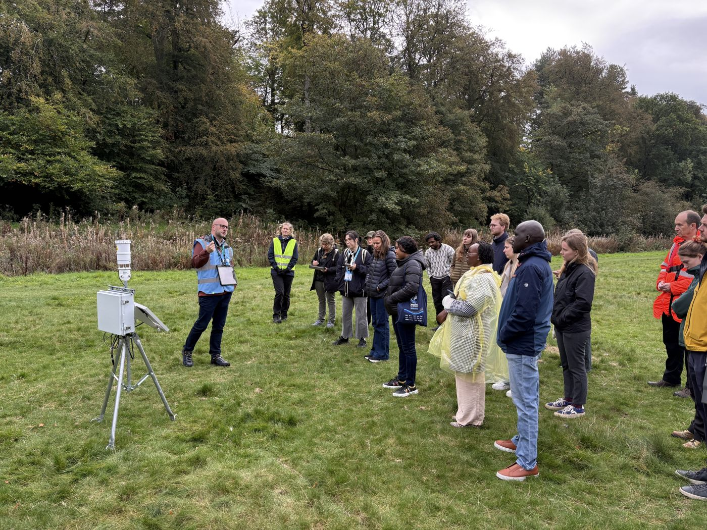
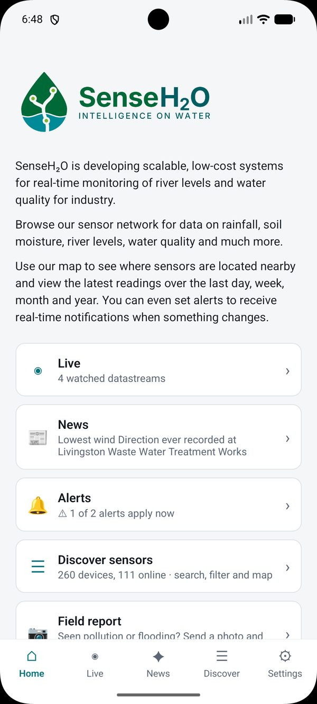
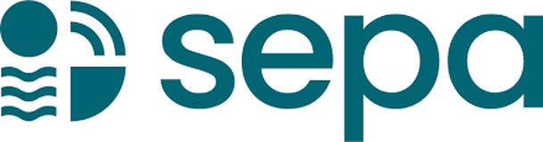
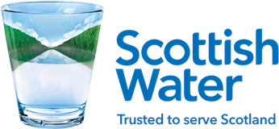
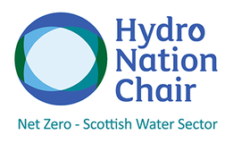

Airthrey Loch
On the University of Stirling campus. Easy access and good network coverage make it the place to troubleshoot, with lab samples for calibration.
LochLPWA
Intelligence on water · NERC-funded · 2024–2028
SenseH2O is building a low-cost, scalable system for monitoring water quality in real time. It combines the latest sensors with cybersecure communications, AI-powered data pipelines and web-based data visualisation, designed with the water industry to meet its needs.
The River Forth near Stirling
Why it matters
of UK rivers were in good ecological status or better in the 2019 Water Framework Directive assessment. Many fail because of poor water quality, from farm and urban runoff, wastewater treatment works and combined sewer overflows. More frequent floods and droughts make this worse.
Lower-cost sensors, low-power networks and AI-powered analytics have the potential to transform how we monitor lakes and rivers and provide managers with the intelligence to make better decisions.
Objectives
Co-develop requirements for monitoring water quality at scale with industry partners and stakeholders.
Integrate low-cost water quality and weather sensors, with power and wireless options suited to different catchment contexts.
Build a software platform that uses statistics and AI to clean data, flag outliers and assess trends automatically.
Build a web interface and mobile app that show the benefits of OGC standards and FAIR data.
Test the system in contrasting catchments and benchmark it against existing solutions.
Approach
SenseH2O follows an agile plan that responds to changing user needs, standards and technologies.
Co-design workshops with SEPA, Scottish Water and other stakeholders, a public show-and-tell on the River Almond, and routes to commercialisation.
A modular, extensible framework for integrating low-cost sensors into an intelligent network.
Off-grid power and secure data communications over LPWA, mobile and satellite networks.
Cloud data pipelines that detect anomalies and extremes, fill gaps and assess trends in near real time.
Field trials in contrasting settings to measure accuracy, reliability, cost and power use.

Stations are modular, so SDI-12 or RS-485 sensors can be added as deployments need them or as new technology comes to market.
Example configurations
Field sites
Each site tests a different part of the system, from an accessible campus loch to a river with existing commercial monitoring to benchmark against.
On the University of Stirling campus. Easy access and good network coverage make it the place to troubleshoot, with lab samples for calibration.
Almondell & Calderwood Country Park, West Lothian. Sited beside the MOT4Rivers commercial flow-through systems for direct benchmarking, with Scottish Water data on sewer overflows.
Live data
Each card shows the most recent observation for every measured property, with the last 48 hours as a sparkline. Real-time data are served through the OGC SensorThings API.
Mobile app
See where our sensors are deployed, check the latest readings, and follow trends over days, weeks and months.

Progress updates
Newest first.
Researchers can now pull and plot SenseH2O observations directly in R or Python using the project's SensorThings client scripts.
Prof Peter Hunter presented the project to members of the Global Water Research Coalition (GWRC).
Delegates from the IWA World Water Congress saw the SenseH2O system demonstrated during a tour of the River Almond catchment.
Dr Craig Wilkie presented the project at the NERC Digital Gathering 2026, hosted by the University of Stirling.
William Field has joined the project as Research Software Technician, based at the University of Glasgow.
[Send dates and a sentence or two for each milestone.]
Peter Hunter and Craig Wilkie presented SenseH2O at the Innovation in Environmental Monitoring introductory meeting at Caxton House, London.
The project starts, funded by NERC through the Innovation in Environmental Monitoring programme.
People and partners



Funded by the Natural Environment Research Council (NERC). The project builds on Forth-ERA, the Forth Environmental Resilience Array, and works alongside the NERC MOT4Rivers project.
Questions
Water temperature, conductivity, dissolved oxygen and turbidity, alongside weather and hydrology: air temperature, humidity, rainfall, water level and soil moisture. The exact set depends on cost and on what partners need. Stations are designed so sensors for nutrients, organic pollution or cameras can be added.
Water temperature affects how much oxygen water can hold. Conductivity, in µS/cm, tracks dissolved salts and can signal pollution. Dissolved oxygen, in mg/L, shows whether fish and invertebrates can thrive. Turbidity, in NTU, measures cloudiness from sediment or runoff.
Data follow the FAIR principles and are served through the OGC SensorThings API at sensors.siec.ac.uk/FROST-Server/v1.1. Access currently needs a SIEC account. [Placeholder: licence and how to cite.]
We work with regulators, water companies, sensor manufacturers, rivers trusts and community groups. If you would like to take part, contact the project lead.